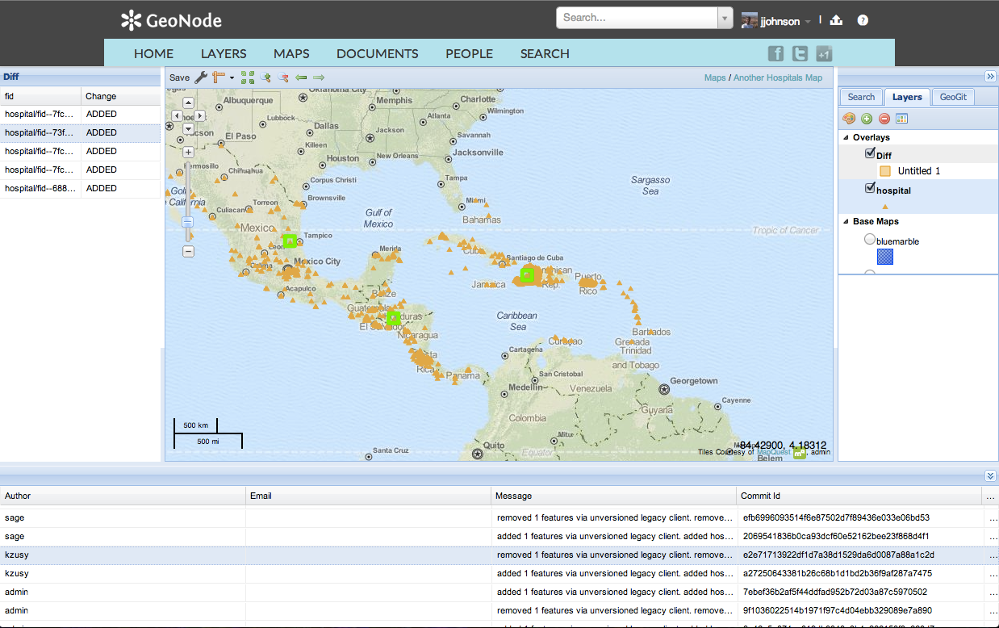

GeoGit + OSM
Using GeoGit with OpenStreetMap
Distributed Versioned Spatial Data Editing

Intro
GeoGit is a distributed version control system for geographic information. It is heavily inspired by the git distributed version control system design and principles[1], adapting them to the differences in the problem domain.
[1] It has no formal relationship with the git project and is not built on top of git.
“Every (Geo)Git clone is a full-fledged repository with complete history and full revision tracking capabilities, not dependent on network access or a central server. Branching and merging are fast and easy to do.” —http://git-scm.com/
Current development of geotools based java library as part of ROGUE JCTD
(feature complete as of version 0.3 June 2013)
DVCS Adapted to geospatial data
Commands are similar to Git ones, but with a different behaviour adapted to the particular data being versioned.
$ geogit diff --nogeom
6350a6... 6350a6... 37d757... e0c9ec... M parks/22
the_geom: 0 point(s) deleted, 1 new point(s) added, 3 point(s) moved
parktype: "Garden" -> "Park"
6350a6... 6350a6... 887b4a... fad2fa... M parks/12
the_geom: 0 point(s) deleted, 0 new point(s) added, 18 point(s) moved
$ geogit help
usage: geogit command [args]
The most commonly used geogit commands are:
--help Print this help message, or provide a command name to get help for
add Add features to the staging area
apply Apply a patch to the current working tree
blame Shows information about authors of modifications for a single feature
branch List, create, or delete branches
checkout Checkout a branch or paths to the working tree
cherry-pick Apply the changes introduced by existing commits
clean Deletes untracked features from working tree
clone Clone a repository into a new directory
commit Record staged changes to the repository
config Get and set repository or global options
conflicts Shows existing conflicts
diff Show changes between commits, commit and working tree, etc
fetch Download objects and refs from another repository
format-patch Creates a patch with a set of changes
help Print this help message, or provide a command name to get help for
init Create an empty geogit repository or reinitialize an existing one
log Show commit logs
ls Obtain information about features in the index and the working tree.
merge Merge two or more histories into one
osm GeoGit/OpenStreetMap integration utilities
pg GeoGit/PostGIS integration utilities
pull Fetch from and merge with another repository or a local branch
push Update remote refs along with associated objects
rebase Forward-port local commits to the updated upstream head
remote remote utilities
reset Reset current HEAD to the specified state, optionally modifying index and working tree to match
revert Revert commits to undo the changes made
rm Remove features or trees
show Displays information about a commit, feature or feature type
shp GeoGit/Shapefile integration utilities
sl GeoGit/SpatiaLite integration utilities
squash Squash commits
status Show the working tree status
tag creates/deletes tags
Branches
- Branches are easy to create
- Good for analyzing what-if scenarios
- They can later be merged or rebased
$ geogit merge mybranch
$ geogit rebase mybranch
OSM Pull Requests?
Conflicts
GeoGit detects conflicts when merging or rebasing.
$ geogit merge mybranch
CONFLICT: Merge conflict in parks/2
CONFLICT: Merge conflict in parks/3
CONFLICT: Merge conflict in parks/1
Automatic merge failed. Fix conflicts and then commit the result.
$geogit rebase branch1
Error: could not apply 0b0e33b Changed units in area field
CONFLICT: conflict in parks/5
When you have fixed this conflicts, run 'geogit rebase --continue' to continue rebasing.
If you would prefer to skip this commit, instead run 'geogit rebase --skip.
To check out the original branch and stop rebasing, run 'geogit rebase --abort'
$ geogit conflicts --diff
---parks/parks.2---
Ours
number_fac: 0 -> 5
Theirs
number_fac: 0 -> 2
the_geom: MultiPolygon [-122.99,42.42 -122.1,42.68 -122.52,42.96 -122.4,42.794 -122.76,42.82] (-122.2,42.57 -122.33,42.216 -122.26,42.12 -122.14,42.556) -122.17,42.71 -122.43,42.17 -122.54,42.426 -122.96,42.71 -122.84,42.54 -122.2,42.57
Conflict resolution
Currently Limited to command-line interface. Not much interactivity.
$ geogit checkout --theirs
A graphical three-way merge tool is on its way...
OSM functionality in GeoGit commands
- Commands that replace common GeoGit commands with OSM-specific versions
- Commands with additional extra functionality for working with OSM data
OSM GeoGit commands
- osm import-history
- osm import
- osm download
- osm map
- osm export shp pg sl
- osm unmap
- osm create-changeset
import-history Import OpenStreetmap history
Usage: import-history [options]
Options:
--dev Use the development test api endpoint
. NOTE: this is not the real osm history, but just
for testing purposes.
Default: false
--from initial changeset id.
Default: 1
--keep-files, -k If specified, downloaded changeset files are kept
in the --saveto folder
Default: false
--numthreads, -t Number of threads to use to fetch changesets. Must
be between 1 and 6
Default: 4
--resume Resume import from last imported changeset on the
current branch.
Default: false
--saveto Directory where to save the changesets. Defaults to
$TMP/changesets.osm
--to final changeset id.
Default: 1000
import Import OpenStreetMap data from a file
Usage: import [options] OSM file path
Options:
--add Do not remove previous data before importing
Default: false
--mapping The file that contains the data mapping to use
--no-raw Do not import raw data when using a mapping
Default: false
download Download OpenStreetMap data
Usage: download [options] [OSM Overpass api URL. eg: http://api.openstreetmap.org/api]
Options:
--bbox, -b The bounding box to use as filter (S W N E).
--filter, -f The filter file to use.
--keep-files, -k If specified, downloaded files are kept in the
--saveto folder
Default: false
--mapping The file that contains the data mapping to use
--rebase Use rebase instead of merge when updating
Default: false
--saveto Directory where to save the dowloaded OSM data
files.
--update, -u Update the OSM data currently in the geogit
repository
Default: false
map Create new data in the repository, applying a mapping to the current OSM data
Usage: map [options] file
unmap Updates the raw OSM data, unmapping the mapped OSM data in a given tree in the working tree
Usage: unmap [options] path
create-changeset Save diff between versions as OSM changeset
Usage: create-changeset [options] [{commit} [{commit}]]
Options:
-f File to save changesets to
export Export to OSM format
Usage: export [options] [file] [commitish]
Options:
--bbox, -b The bounding box to use as filter (S W N E).
--overwrite, -o Overwrite output file
Default: false
export-shp Export OSM data to shapefile, using a data mapping
Usage: export-shp [options] [shapefile]
Options:
--mapping The file that contains the data mapping to use
--overwrite, -o Overwrite output file
Default: false
export-pg Export OSM data to a PostGIS database, using a data mapping
Usage: export-pg [options]
Options:
--database The databse to connect to. Default: database
Default: database
--host Machine name or IP address to connect to. Default:
localhost
Default: localhost
--mapping The file that contains the data mapping to use
--overwrite, -o Overwrite output tables
Default: false
--password Password. Default:
--port Port number to connect to. Default: 5432
Default: 5432
--schema The database schema to access. Default: public
Default: public
--user User name. Default: postgres
Default: postgres
export-sl Export OSM data to a Spatialite database, using a data mapping
Usage: export-sl [options]
Options:
--database The databse to connect to. Default: database.sqlite
Default: database.sqlite
--mapping The file that contains the data mapping to use
--overwrite, -o Overwrite output tables
Default: false
--user User name. Default: user
Default: user
OSM data in a GeoGit repository
- All OSM data is stored in a fixed destination ('way' and 'node' trees) and using fixed schemas
- OSM commands assume this data structuring
- Can also be stored anywhere in the repository, and handled as any other data, but OSM-specific functionality will not be available.
- Data mappings enable the use OSM data in a GeoGit repository with a custom schema different to the default one
Import data from OSM
Osmosis-based data importing
$ geogit osm import myosmdata.pbf
inspect osm repo : nodes
$ geogit show WORK_HEAD:node/2222455894
ID: d428a46716c4b84f5dc43e10d38b295d77069f32
ATTRIBUTES
----------
changeset: 15491936
location: POINT (44.998520500000005 -24.221625600000003)
tags: Optional.absent()
timestamp: 1364220282000
user: joedalton85:420883
version: 1
visible: true
inspect osm repo : ways
$ geogit show WORK_HEAD:way
TREE ID: 1c59a2093a60724251de30db898bbf19530a1d86
SIZE: 136141
NUMBER Of SUBTREES: 0
DEFAULT FEATURE TYPE ID: 03585dd9f1ccd1555372782e6f18bf44ec5d9693
DEFAULT FEATURE TYPE ATTRIBUTES
--------------------------------
changeset:
nodes:
tags:
timestamp:
user:
version:
visible:
way:
inspect single way
$ geogit show WORK_HEAD:way/209210368
ID: c88760783653d1a1f5f8faf0e48dbcd756783a52
ATTRIBUTES
----------
changeset: 15316528
nodes: 2194411060;2194411094;2194411102;2194411071;2194411060
tags: building:yes|source:Bing
timestamp: 1362929895000
user: AndrewBuck:214969
version: 1
visible: true
way: LINESTRING (43.6597741 -23.3428405, 43.6597865 -23.3429049, 43.659688100000004 -23.342920900000003, 43.6596757 -23.3428565, 43.6597741 -23.3428405)
Download using Overpass API
Simple BBox query
$ geogit osm download --bbox 40 -2 40.02 -1.88
Overpass Query Language
$ geogit osm download --filter myquery.txt
overpass api query
$ cat filter.oql
(
way
(33.1568,-117.418,33.227,-117.297);
>;
);
out meta;
download and import using a filter query
$ geogit osm download --filter filter.oql
Downloading data...
6,240,137
Importing into GeoGit repo...
28,264 Counting unstaged features...28265
Staging changes...
100%
28265 features staged for commit
0 features not staged for commit
100%[d7c35ac2fb1024dd6b9d55a46f0b119ae552f41d] Updated OSM data
Committed, counting objects...28265 features added, 0 changed, 0 deleted.
inspect the log
$ geogit log
Commit: 684d104702b53f1ad284674f9bd20f5620ac0ed8
Author: Jeffrey Johnson jjohnson@opengeo.org
Date: (1 minutes ago) 2013-06-07 17:15:53 -0600
Subject: Updated OSM data
Updating
GeoGit logs usage of download command so it can match a commit to the OSM changeset it represents.
This can be used to intelligently update the current OSM data in the repository, considering new changes introduced in the local repository.
$ geogit osm download --update
pull new changes from osm planet
$geogit osm download --update
Downloading data...
6,241,044
Importing into GeoGit repo...
28,269 Counting unstaged features...5
Staging changes...
100%
5 features staged for commit
0 features not staged for commit
100%[feb760cf5066739fbcc1f0dd1908f66d6f24c21f] Updated OSM data
Committed, counting objects...5 features added, 0 changed, 0 deleted.
200%[feb760cf5066739fbcc1f0dd1908f66d6f24c21f] Updated OSM data
Committed, counting objects...5 features added, 0 changed, 0 deleted.
inspect the log
$ geogit log
Commit: feb760cf5066739fbcc1f0dd1908f66d6f24c21f
Author: Jeffrey Johnson jjohnson@opengeo.org
Date: (30 seconds ago) 2013-06-07 16:08:05 -0600
Subject: Updated OSM data
Commit: d7c35ac2fb1024dd6b9d55a46f0b119ae552f41d
Author: Jeffrey Johnson jjohnson@opengeo.org
Date: (14 minutes ago) 2013-06-07 15:53:36 -0600
Subject: Updated OSM data
inspect a diff
$geogit diff HEAD~1 HEAD
000000... 03585d... 000000... 9fd888... A way/224798080
changeset 16463100
nodes 2336392952;2336392956;2336392959;2336392962;2336392952
tags building:yes
timestamp 1370642619000
user ortelius:206
version 1
visible true
way LINESTRING (-117.3754297 33.1935993, -117.375359 33.1935122, -117.3754596 33.193455, -117.3755302 33.1935421, -117.3754297 33.1935993)
000000... f63c0d... 000000... c70b64... A node/2336392952
changeset 16463100
location POINT (-117.3754297 33.1935993)
tags
timestamp 1370642619000
user ortelius:206
version 1
visible true
Updating
Similar to the GeoGit pull command.
Update can be done merging or rebasing.
$ geogit osm download --update --rebase
If changes have been made to the repository and conflicts exist, the merge/rebase operation will detect and signal them, just like it does with non-OSM data during a pull operation.
Current Limitations with update
- The operation is not optimal, as it downloads the whole current snapshot, not just new entities.
- newer clause in Overpass API does not report deletions
- OSM API does not allow for flexible filtering when fetching history
- We need the best of both worlds (history + filtering).
Data mappings
Working with OSM data in a specific schema is easier and more practical.
Makes it easier to edit versioned OSM data in an external app (GIS) and update the repository data
Data mappings
- Similar to Imposm mappings
- JSON definition
{"rules":
[
{
"name":"onewaystreets",
"filter":{
"oneway":["yes"]
},
"fields":{
"lit":"STRING",
"geom":"LINESTRING"
}
}
]
}
Data mappings. How to use them
Creating new trees in the repository with mapped OSM data
$ geogit osm map mymapping.json
Exporting mapped OSM data to Shapefile/PostGIS/Spatialite
$ geogit osm export-shp mapped.shp --mapping mymapping.json
Data mappings. Unmapping
Reconstruct OSM object in the canonical trees from mapped data
$ geogit osm unmap mapped_tree
Workflow with mapping
- Download/update OSM data
- Export a mapped version of the data to edit.
- Edit in your favorite GIS software.
- Import changed data into GeoGit repository.
- Unmap (this will update the canonical OSM data in the repo)
- Commit to create a new snapshot.
- Update to merge changes from OSM planet (if any).
Changesets
Changesets can be created with the create-changeset command.
Similar to the diff command, but works only on OSM data in the repository.
$ geogit create-changeset HEAD HEAD~1 -f mychangeset.xml
inspect changeset
Further improvements
- Better unmapping for ways.
- Handle relations
- Contribute to OSM planet from GeoGit (create an osm push command)
Beyond the CLI
- QGIS plugin
- GeoServer integration
- APIs
QGIS Plugin
Desktop GeoGit based GIS
Working towards SourceTree like functionality


GeoServer Integration
- GeoGit GeoTools Store
- Provides OGC Services (WMS/WFS-T/TMS)
- Provides GeoGit Remote API (clone, push, pull)
- Provides Basic HTTP Client API

APIs
- Remote API (clone, push, pull)
- HTTP Client API (lets not call it REST for now)
Remote API
clone
$ geogit clone http://localhost:8080/geoserver/geogit/geonode:geogit-repo geogit-repo-clone
Cloning into 'geogit-repo-clone'...
100%
Done.
$ geogit ls-tree
san_andres_y_providencia_administrative
san_andres_y_providencia_coastline
urbanareas1_1
san_andres_y_providencia_administrative0
Route
inspect cloned repo
$ geogit ls-tree
san_andres_y_providencia_administrative
san_andres_y_providencia_coastline
urbanareas1_1
san_andres_y_providencia_administrative0
Route
inspect a specific tree
$ geogit show WORK_HEAD:Route
TREE ID: ccc63d492d3839ad59ffff8429155dab03f980ff
SIZE: 68
NUMBER Of SUBTREES: 0
DEFAULT FEATURE TYPE ID: d376bd1a9aeb74f6f09629f0428cb1fa2d8cda4a
DEFAULT FEATURE TYPE ATTRIBUTES
--------------------------------
COMMENT: [STRING]
Company: [STRING]
DATE: [DATETIME]
MILEAGE: [STRING]
OBJECTID: [INTEGER]
OID_: [INTEGER]
ROUTE_ID_1: [DOUBLE]
Route_ID: [INTEGER]
Shape_Leng: [DOUBLE]
the_geom: [MULTILINESTRING]
pull
$ geogit pull
100%
From http://localhost:8080/geoserver/geogit/geonode:geogit-repo
1ba275f..5f1613b master -> refs/heads/master
Features Added: 1 Removed: 0 Modified: 0
inspect log
$ geogit log
Commit: 5f1613b20dc5e069f32004940671bb932a2872f0
Author: admin
Date: (31 minutes ago) 2013-06-08 11:26:00 -0600
Subject: added 1 features via unversioned legacy client.
added san_andres_y_providencia_administrative0/fid--35fef413_13f24d27905_-7ffd
Commit: 1ba275fa026ce30a80adb422abe97ded43dec495
Author: Jeffrey Johnson jjohnson@opengeo.org
Date: (21 hours ago) 2013-06-07 14:08:17 -0600
Subject: added 5 features via unversioned legacy client.
added san_andres_y_providencia_administrative0/fid--cfd070e_13f2024e73f_-7a6b
added san_andres_y_providencia_administrative0/fid--cfd070e_13f2024e73f_-7a6a
added san_andres_y_providencia_administrative0/fid--cfd070e_13f2024e73f_-7a68
added san_andres_y_providencia_administrative0/fid--cfd070e_13f2024e73f_-7a67
added san_andres_y_providencia_administrative0/fid--cfd070e_13f2024e73f_-7a69
push
HTTP Client API
ls-tree endpoint
{
"response": {
"success": true,
"node": [
{
"path": "way"
},
{
"path": "node"
}
]
}
}
log endpoint
{
"response": {
"success": true,
"commit": [
{
"id": "d9e186c375f6855a5c11502f8c959a9eb8657518",
"tree": "41ec9b5c6b271526277ba8c8e108adef4760e19f",
"parents": {
"id": "684d104702b53f1ad284674f9bd20f5620ac0ed8"
},
"author": {
"name": "JeffreyJohnson",
"email": "jjohnson@opengeo.org",
"timestamp": 1370647264791,
"timeZoneOffset": -25200000
},
"committer": {
"name": "JeffreyJohnson",
"email": "jjohnson@opengeo.org",
"timestamp": 1370647264791,
"timeZoneOffset": -25200000
},
"message": "UpdatedOSMdata"
},
Whats next?
OSM Ideas
- Osmosis plugin
- JOSM plugin
- iDeditor Extension
- Full history import
Other Ideas
- libgeogit & ogr driver
- Conflation tools
- Scripting libs (pre and post commit hooks)
- MapReduce & Analytics
- 'Other' Desktop Integration
- Automated Repo Sync
Get Involved!
Pull requests welcome!
Further Reading
Thanks!